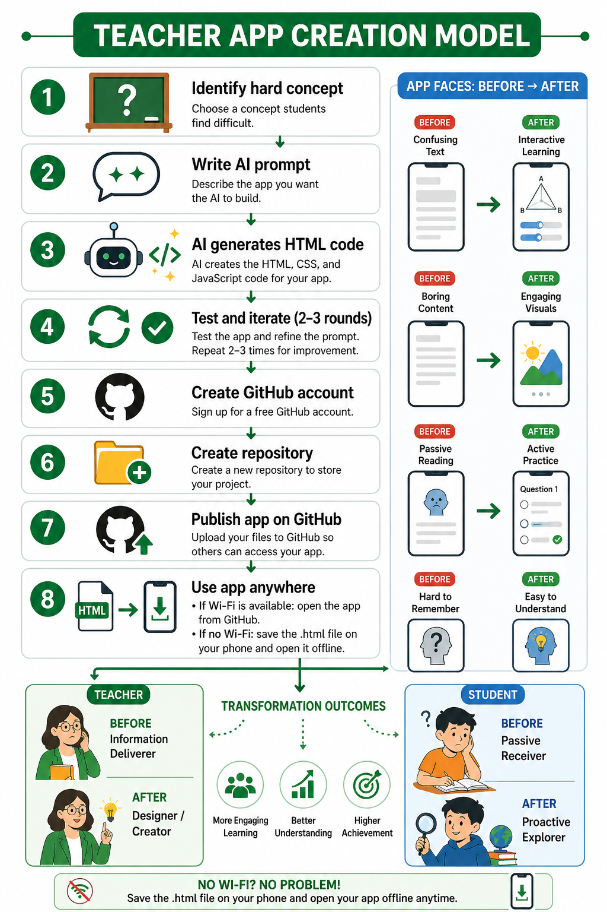

In 1905, after 1,300 years, the imperial examination system of China was abolished. Millions of scholars who had dedicated their lives to memorizing the Confucian classics found themselves in a world that no longer valued their skills. They had not become lazy or incompetent. The world had changed around them. Western learning, industrial technology, and new forms of governance had rendered their expertise obsolete. The tragedy of the xiucai — the scholar who had passed the county exam — was not that he failed to study, but that he had studied for a world that no longer existed.
Today, as generative AI transforms knowledge work, many educators and parents feel a similar tremor. Will the skills we teach today — memorizing formulas, drilling grammatical rules, practicing procedural problem‑solving — become the equivalent of reciting the Four Books and Five Classics? Will our students, like those scholars of 1905, find that the system they mastered has collapsed beneath them, not because of their own failings, but because the tectonic plates of the economy have shifted? As one parent interviewed by BBC News described, watching her daughter begin first grade, she could not help but think of the scholars of 1905 — highly trained for a world that was about to disappear (BBC Chinese, 2026).
These anxieties are real. But they arise from a context of relative abundance — abundant educational technology, abundant debate about curriculum reform. There is another world where these debates are luxuries that do not apply. In Zanzibar, Tanzania, primary education remains overwhelmingly paper and chalk based. Nearly no teacher has ever used an educational app. Nearly no student has ever interacted with a digital quiz. The question is not "how do we adapt our over‑digitalized system to AI?" but rather "can we leapfrog directly from minimal digital tools to AI‑assisted creation?"
Meanwhile, in March of 2026, City University of Hong Kong (CityUHK) partnered with Tencent WeTech Academy to host the "Principals' AI Open Class and Tencent AI Campus Tour" on the CityUHK campus (City University of Hong Kong, 2026). The opening ceremony was officiated by Hong Kong's Financial Secretary, Mr. Paul Chan Mo-po. For two consecutive days, over 100 primary and secondary school principals from Hong Kong sat in front of computers and, like students, learned to use AI to write small programs, including developing Weixin Mini Programmes with AI. The purpose was to let frontline educators feel the impact of AI firsthand, integrate it into their teaching systems, and prepare students for an AI‑driven era. The event also featured an AI Programming Bootcamp for university students, allowing them to experiment with various AI models, including Tencent's CodeBuddy and WorkBuddy, which are designed for users without a programming background (City University of Hong Kong, 2026).
This study answers that question with a resounding yes. We trained 32 Zanzibari teachers — with nearly no prior app experience, and zero coding knowledge — to use generative AI and GitHub to build their own interactive educational apps. The AI tools used in training included Claude, DeepSeek, Gemini, ChatGPT, and GitHub Copilot. Within three days, 93% had created functional apps using one or more of these tools. Students who had rarely or never seen a teaching app were suddenly learning fractions with interactive pizzas, simulating Newton's laws with animated boats, and shifting supply‑and‑demand curves on a phone screen. The chalkboard is not enough — but AI+GitHub is the leap.
| Dimension | Before (Chalkboard Only) | After (Chalkboard + AI+GitHub Apps) |
|---|---|---|
| Teacher role | Dispenser of information | Designer of interactive experiences |
| Student role | Passive receiver (listens, copies) | Proactive actor (explores, tests) |
| Feedback | Delayed (days, after grading) | Immediate (per action, per answer) |
| Error handling | Public correction or hidden mistake | Private, safe, iterative ("try again") |
| Student questions | Rare (clarification only) | Frequent ("what if," "why," "how") |
| Engagement duration | Declines after 10–15 minutes | Sustained 30+ minutes; students request more |
Our intervention is grounded in established learning theories. Constructivism (Piaget, 1952, 1954; Vygotsky, 1978) holds that learning is active construction, not passive reception — students must act on information to internalize it. Self‑Determination Theory (Deci & Ryan, 2000) identifies autonomy, competence, and relatedness as drivers of intrinsic motivation. Interactive apps provide all three: choice (autonomy), immediate mastery feedback (competence), and collaboration around shared devices (relatedness). Feedback Loop Theory (Hattie & Timperley, 2007) demonstrates that immediate, task‑focused feedback accelerates learning dramatically compared to delayed feedback. The TPACK framework (Mishra & Koehler, 2006) positions technological knowledge as integral to pedagogy — which AI+GitHub makes accessible to non‑programmers.
A recent and highly relevant contribution to this field comes from Balaji, Ogange, and Mays (2025), who introduced the "Teacher-in-the-Loop AI" (TiL-AI) model through the Commonwealth of Learning. Their approach positions teachers as active partners in using generative AI to adapt Open Educational Resources (OER) to align with national curricula across India, Ghana, the Pacific region, Jamaica, Kenya, and Nigeria. The authors proposed a six-step co-creation cycle: (1) teacher uses prompts to identify and adapt OER content through GenAI; (2) teacher edits the content; (3) teacher checks sources and copyright compliance; (4) mentor reviews content and licenses; (5) peer reviewers check changes; (6) new OER is published with an appropriate open license (Balaji et al., 2025, p. 441). Central to their model is the concept of teachers as "graders" who refine LLM outputs, ensuring accuracy, relevance, and cultural appropriateness.
The Balaji et al. (2025) study is significant for several reasons. First, it validates the broader claim that teacher‑in‑the‑loop approaches to AI are viable across multiple developing countries. Their case studies included: (a) secondary school educators in India creating context‑specific OER for Grade 9 mathematics; (b) a co-creative mentoring model in Ghana integrating gender‑responsive pedagogy; (c) over 800 teachers trained in the Pacific region, with 40 teachers creating 357 lesson plans in one week; (d) teachers from over 30 TVET institutions across Ghana, Jamaica, Kenya, and Nigeria developing OER in Fashion Design and Science Laboratory Technology (Balaji et al., 2025, pp. 442-443). These examples demonstrate the scalability of teacher‑centered AI approaches.
Second, their work provides an evaluation rubric for AI‑generated content that includes criteria such as alignment to curriculum standards, quality of explanation, utility for teaching, quality of assessment, accessibility, and license compatibility (Balaji et al., 2025, p. 441). This rubric could be adapted for evaluating the teacher‑created apps in our study.
Third, and most importantly for positioning our contribution, the Balaji et al. (2025) model focuses on adapting existing OER (lesson plans, activities, assessments) — that is, text‑based content. Our study extends this paradigm significantly. While TiL‑AI empowers teachers to adapt existing resources, our model enables teachers with nearly no prior app experience to create original, functional, interactive software from scratch using AI and GitHub. This is a leap from content adaptation to software creation, from static OER to executable apps that provide immediate feedback, simulation, and gamification — capabilities that text‑based OER cannot offer.
Recent empirical work on "vibe coding" (Chen et al., 2026; Microsoft Learn, 2025) confirms that beginners can produce functional code via natural language prompts — a finding we extend to primary school teachers in low‑resource contexts using multiple AI platforms (Claude, DeepSeek, Gemini, ChatGPT, Copilot). Parallel studies in South Africa (Naidoo, 2026) and Zanzibar itself (R.O.S.A. ReCoding Africa, 2025) validate teacher‑first, low‑infrastructure AI training models. A large‑scale study in China's Guangxi border areas (Scientific Reports, 2025) identified similar barriers to teacher programming education. The global anxiety about AI rendering traditional skills obsolete has been documented by BBC News (2026), which compared contemporary educational uncertainty to the abolition of China's imperial exams in 1905.
Our study is the first to combine these elements into a complete, reproducible model that moves teachers directly from paper‑and‑chalk to AI‑assisted software creation, with explicit offline deployment strategies (Singletary, 2026; Zanzibar MoE, 2023). Together with Balaji et al. (2025), we argue that teacher‑in‑the‑loop AI approaches are viable across a spectrum of content types — from text‑based OER adaptation to executable educational app creation — and that the latter represents a new frontier for empowering teachers in the world's lowest‑resource classrooms.
| Dimension | Balaji et al. (2025) — TiL‑AI | Our Zanzibar Study |
|---|---|---|
| Core activity | Adapting existing OER using AI | Creating original apps from scratch using AI |
| Teacher role | Curator, adapter, grader | Designer, creator, coder (via vibe coding) |
| Output type | Text‑based lesson plans, activities, assessments | Fully functional interactive HTML/JS apps |
| Technical requirement | Access to LLM + OER repositories | Any AI tool + GitHub (offline HTML) |
| Offline capability | Not emphasized | Explicit offline HTML (download once, use forever) |
| Regional scope | Multiple countries (India, Ghana, Pacific, Jamaica, Kenya, Nigeria) | Zanzibar (one region, in‑depth case study) |
Zanzibar's primary schools are among the least digitized in the world. According to the Ministry of Education's 2023 report (Zanzibar MoE, 2023), less than 5% of schools have computers for student use; fewer than 1% of teachers have ever integrated any digital application. Teaching is almost exclusively paper‑and‑chalk. Our participants were 32 teachers (24 female, 8 male; average experience 13 years) from four public primary schools. Inclusion criterion: nearly no prior use of any educational app. Nearly all taught with chalkboard (100%) and paper handouts (94%). None had a GitHub account; fewer than 5% had heard of generative AI. Student participants (n=184, grades 3–7) and parents (n=18) were recruited with consent. A district education officer from the Ministry of Education observed two classroom sessions.
The following eight‑step procedure was refined over three training cohorts in Zanzibar. It requires no prior coding experience and works with shared smartphones and intermittent internet. Teachers used a variety of AI tools — Claude, DeepSeek, Gemini, ChatGPT, and Copilot — with similar success rates across platforms.

One of the most important features of this method: After you generate an app using any AI tool (Claude, DeepSeek, Gemini, ChatGPT, or Copilot), you can save it once and use it forever without any internet connection. This is critical for low‑resource classrooms with unreliable or no internet access.
After generating your app in any AI tool and copying the code:
my-app.html (the .html extension is essential).If you have pushed your app to GitHub (Steps 5–7):
.html file.Perfect for teachers who only have a phone:
my-app.html.This section is for any educator, anywhere. No coding experience needed. You need: a free account on any AI tool (Claude, DeepSeek, Gemini, ChatGPT, or Copilot), a free GitHub account (optional for sharing), and 45–60 minutes.
After the AI returns the code, save as past-tense-game.html. Test it. Then use the download methods above to transfer it to a classroom phone. You have now created your first offline‑capable, AI‑powered educational app — regardless of which AI tool you used.
https://yourusername.github.io/your-repo-name/ in under 10 minutes.
| Indicator | Chalkboard Only | With AI+GitHub Apps | Change |
|---|---|---|---|
| Student "what if" questions | 0.2 | 3.8 | +1800% |
| Voluntary exploration beyond lesson | <5% of students | 78% of students | +73% |
| Peer teaching/debate incidents | 1.2 (mostly copying) | 6.7 (explaining, arguing) | +458% |
| Off‑task behavior (% of class time) | 38% (after 15 min) | 9% (sustained) | -76% |
Our findings demonstrate that teachers with nearly no prior app experience can, within days, become creators of personalized, functional educational apps using AI+GitHub. Importantly, this success was not dependent on a single AI tool — teachers used Claude, DeepSeek, Gemini, ChatGPT, and Copilot with comparable results. This platform‑agnostic success is crucial for reproducibility: any freely available generative AI tool can power the leapfrog.
In wealthier education systems, much of the conversation about AI is anxious: parents fear their children will become like the scholars of 1905 — highly trained in skills the world no longer values. Teachers worry about obsolescence. Institutions debate whether to ban or embrace specific AI tools. This anxiety is understandable but, we argue, misplaced. The solution is not to retreat from AI or to ban specific tools, but to teach students — and teachers — to ride the wave, using whatever tools are available.
Positioning our work within the emerging literature on teacher‑in‑the‑loop AI (Balaji et al., 2025), we see both continuity and extension. The Commonwealth of Learning's TiL‑AI model successfully empowers teachers to adapt existing OER across multiple countries. Our study takes this paradigm a significant step further: we demonstrate that teachers can move from being adapters of existing content to creators of original, executable software. This is not merely an incremental improvement. Executable apps provide immediate feedback, simulation, and gamification — capabilities that text‑based OER cannot offer. In Balaji et al.'s terms, our teachers are not just "graders" of AI outputs; they are designers and coders who use natural language prompts to build interactive learning environments from scratch.
In Zanzibar, there was nearly no pre‑existing digital infrastructure to defend, no entrenched software licenses to justify, no habit of passive app consumption to unlearn. The teachers we trained were not digital natives — but they were creativity natives, experts in their subjects, desperate for ways to make abstract concepts vivid. Once given access to tools like Claude, DeepSeek, Gemini, ChatGPT, or Copilot — tools that turned their descriptions into code — they did not hesitate. They rode the wave.
The contrast with the TiL‑AI model is instructive. Balaji et al. focus on curriculum alignment and OER licensing — crucial concerns. But our teachers were not constrained by existing OER; they built entirely new apps personalized to their students' local context (mangoes instead of abstract fractions, dhows instead of generic blocks, clove markets instead of generic supply curves). This suggests that AI+GitHub may enable a form of radical localization that goes beyond adapting existing resources.
Our seed teacher model — where 14 teachers trained 39 peers informally — shows that riding the wave is contagious. Once a teacher experiences the shift from passive transmission to interactive design, they want to share it. This is not top‑down policy; it is peer‑to‑peer propagation. And it works even without external incentives.
Limitations remain: short follow‑up (3 months), one region of Zanzibar, reliance on cloud‑based AI (though offline HTML mitigates this). But the direction is clear. The wave is here. The choice is not whether to engage with AI — it is already in our classrooms, whether invited or not. The choice is whether to be carried along or to learn to surf — with Claude, DeepSeek, Gemini, ChatGPT, Copilot, or whatever comes next.
The Zanzibar model succeeded because it removed the traditional barriers to software creation: syntax (via AI), infrastructure (via offline HTML), and scaling (via seed teachers). These barriers are universal in low‑resource settings. Therefore, the solution is also universal — and not tied to any single AI platform. Contexts where we believe this model is directly applicable include: rural schools in sub‑Saharan Africa (Uganda, Malawi, Zambia), refugee camp schools (Kakuma, Rohingya camps), indigenous communities in Latin America (Quechua, Aymara regions), remote island nations, and underserved areas of South Asia (rural India, Bangladesh, Nepal).
The chalkboard served faithfully for two centuries. But it was never enough. It cannot show motion, provide feedback, adapt to individual pace, or let students explore. The scholars of 1905 studied for a world that vanished. We have the chance to do something different. AI+GitHub — with Claude, DeepSeek, Gemini, ChatGPT, Copilot, or any generative AI — does not replace the chalkboard. It does something more important: it enables a new genre of teaching — one that positions students as proactive explorers, not passive receptors. Together with parallel efforts like the Commonwealth of Learning's Teacher‑in‑the‑Loop AI initiative (Balaji et al., 2025), we are witnessing the emergence of a new paradigm: teachers as active, empowered creators in the AI era.
You do not need to be a programmer. You do not need expensive equipment or a specific AI tool. You need a lesson you care about, a description of how you want students to interact with it, and 45 minutes. Any modern AI will write the code. You save it once. It works offline forever. Your students become proactive. The wave is here. Ride it — with whatever board you have.